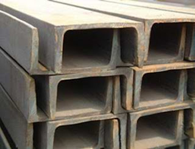

Jual Genteng Metal di Gresik ☎ ??? (www.dis.or.id)
Pada kesempatan kali ini, kami berkesempatan untuk membahas beberapa produk tentang atap. Atap adalah bagian penting sebuah bangunan yang fungsinya untuk menaungi sebuah bangunan. Karena tanpa atap maka sebuah bangunan tidak dapat disebut bangunan dan hanya dapat disebut sebagai bangunan terbengkalai. Disini, galvalum mempunyai peran penting sebagai atap sebuah bangunan. Ini dikarenakan setiap bangunan tentunya membutuhkan atap sebagai penutup bagian atas. Tidak tertarik dengan galvalum? Maka masih tersedia genteng metal yang akan saya bahas di pertemuan kita kali ini. Penasaran seperti apakah fungsi galvalum sebagai atap? Silakan simak artikel berikut ini.
Distributor & Supplier Genteng Metal

Genteng metal adalah salah satu jenis genteng yang berbahan dasar Zincalume, bahan ini merupakan salah satu jenis bahan yang digunakan pada baja ringan. Penggunaan genteng metal Gresik memiliki kelebihan seperti tidak adanya biaya perawatan karena genteng tidak akan berkarat, jamur ataupun pecah. Kami siap melayani pembelian dalam jumlah kecil ataupaun partai besar untuk tiap tiap brand tersebut. Memang saran terbaik ketika anda ingin menggunakan atap dari genteng metal Gresik adalah gunakan jenis genteng metal Gresik pasir terbaik. Apakah anda sedang mencari genteng metal Gresik berkualitas? Maka anda berada di tempat yang tepat, silakan kunjungi dis.or.id dan dapatkan info menarik khusus untuk anda yang ingin segera mengetahui keunggulan genteng metal Gresik ini.
Apakah anda mencari genteng metal Gresik? Silakan kunjungi official site dis.or.id dan temukan info menarik untuk anda. kami berusaha mencari kepuasan pelanggan kami.
Info Pemesanan Selengkapnya
Google Maps: https://www.google.com/maps/d/u/0/viewer?mid=18K_Vf8GKnjN9AtE2jUMATDSYvScojDst&ll=-7.269373870070218%2C112.655575&z=16
Note: https://www.facebook.com/notes/distributor-of-industrial-supply/pabrik-supplier-genteng-metal/1783191985314014/
Event: https://www.facebook.com/events/1480458558737554/
Portfolio Produk: https://www.facebook.com/pg/DistributorOfIndustrialSupplyDIS/photos/?tab=album&album_id=1683750531924827
Distributor & Supplier Besi Beton

Besi beton ulir yaitu besi beton dengan bentuk permukaan khusus bentuk sirip melintang seperti ikan ataupun dengan rusuk memanjang dan memiliki pola tertentu yang dipilih pada proses produksinya. Besi beton dapat menjadi pondasi pada bangunan yang kuat sehingga membuat bangunan yang aplikasikan besi ini dapat kokoh dan tahan lama. Maka dari itu anda harus selektif untuk menentukan besi beton mana yang sesuai dengan yang anda inginkan.
Besi beton polos sangat jarang digunakan kecuali digunakan sebagai kolom.
Segera kunjungi dis.or.id untuk mendapatkan besi beton yang anda inginkan. Karena, disan anda bisa mendapatkan besi beton yang anda inginkan yang pastinya sesuai dengan yang anda ekpetasikan.
Distributor & Supplier Steel Grating

Plat Grating merupakan suatu jenis plat besi yang terbuat dari rangkaian semisal sekrup besi dan plat jalur. Saat ini, Plat Grating bisa di dapatkan dengan mudah. Grating tersebut sangat bermanfaat dan penting untuk keamanan Anda. Dengan mencaro steel grating kualitas terbaik, pastinya kualitas bangunan yang anda bangun akan lebih kokoh dan tahan terhadap berbagai cuaca. Pada umumnya, Grating hanya memiliki 2 type, yaitu serrated atau bergerigi dan plain atau polos.
Kini anda bisa mendapatkan steel grating dengan harga yang sangat murah namun tetap memiliki kualitas dan mutu yang terbaik dengan mengunjungi dis.or.id. Disana anda bisa mendapatkan steel grating dengan berbagai ukuran tertentu dengan harga yang sangat terjangkau namun berkualitas dan bermutu tinggi.
Distributor & Supplier Pipa (Hitam/Gas, Galvanis)

Apa bedanya pipa hitam gas dibanding dengan jenis pipa biasa? Perbedaan antara kedua pipa ini bisa anda lihat langsung pada pengaplikasiannya. Pipa hitam banyak sekali diaplikasikan pada area pertambangan minyak gas karena ia memiliki struktur yang 3 kali lebih kuat dari jenis pipa biasa. Pipa hitam gas galvanis banyak digunakan untuk keperluan area pertambangan minyak gas, untuk itu banyak juga yang mengira pipa hitam ini adalah pipa gas. Karena sudah terlapisi dengan stainless steel pipa ini dapat diaplikasikan pada segala kondisi cuaca di Indonesia. Tentukan kebutuhan pipa hitam anda pada kami, tersedia ukuran ½ inc sampai 40 inc. Segera hubungi kami untuk info pemesanan selengkapnya maupun berkonsultasi mengenai kebutuhan pipa secara langsung.
Distributor & Supplier Kawat Bronjong/Gabion

Kawat bronjong berfungsi sebagai pencegah erosi. Kawat ini juga ada yang berbahan galvanis. Hanya saja, Anda harus tahu kawat ini terbuat dari baja. Namun, banyak yang tidak tahu jika ternyata kawat bronjong ini juga digunakan sebagai pelabis tiang penyangga jembatan. Kawat ini berfungsi agar tidak terjadi gerusan akibat arus air yang mengakibatkan tiang penyangga rusak di mana hal ini bisa berakhir dengan rubuhnya jembatan. Tujuannya agar bebatuan tidak hancur karena terkena ombak terus menerus. Ini bisa Anda lihat di pinggir-pinggir pantai.
Jika sat ini anda sedang membutuhkan kawat bronjong, anda bisa langsung saja mengunjungi dis.or.id. Disan anda bisa mendapatkan informasi tentang kawat bronjong dengan berbagai ukuran dan harga yang pastinya sangat terjangkau. Karena disana anda akan mendapatkan penawaran mengenai kawat bronjong denga berbagai ukuran.
Distributor & Supplier WF H-beam

Saat ini, banyak orang yang ingin mencari jenis besi WF, terlebih ini zaman yang serba modern dan praktis. Terlebih saat ini zaman sudah serta praktis dan mudah. Kekuatan yang dimiliki oleh besi ini memang terbukti kuat dan sangat tinggi. Untuk membuat bangunan seperti rumah, pagar, industri, jalan raya, pabrik, dan lain-lain Anda bisa memakai jenis besi ini. Anda juga bisa lebih gampang saat memakai besi ini karena sifatnya yang tidak terlalu berat dan bisa dibilang ringan dengan komponen yang seimbang.
Saat membawanya pun Anda akan lebih mudah dan praktis. Pembawaan bebannya pun juga sangat mudah dan terjamin.
Kini anda bisa mendapatkan besi WF H-beam dengan sangat mudah, caranya anda bisa langsung saja datang ke dis.or.id. Harga yang di patok juga sangat terjangakau, jadi anda tidak perlu mengeluarkan budget terlalu banyak. Disana anda bisa mendapatkan besi wf yang anda inginkan. Pastinya dengan harga yang sangat terjangkau.
Distributor & Supplier Expanded Metal
.jpg)
Fungsi expanded metal diantaranya untuk anak tangga pada tower dan ternyata banyak juga digunakan di dermaga/pertambangan/konstruksi lepas pantai. Selain itu, Expanded Metal ini juga memiliki banyak jenis. Umumnya dipergunakan sebagai partisi pengaman gudang, railing, pelindung mesin, pagar penjara, plafond, dan lain sebagainya.
Kini anda bisa membeli expanded metal yang anda inginkan dengan mengunjungi dis.or.id. Terdapat berbagai ukuran dari expanded metal yang bisa anda pilih dan anda pesan sekarang juga.
Distributor & Supplier Plat (Hitam, Kapal, Bordes, Strip)
.jpg)
Anda bisa mendapatkan plat hitam, plat kapal, plat bordes dan plat strip dengan mengunjungi situs dis.or.id. Dengan mengunjungi situs tersebut, anda bisa mengetahui secara detail segala jenis plat yang mungkin sedang anda butuhkan. Tak perlu khawatir harga, karena harga yang di patok pastinya sangat murah dan terjangkau.
Distributor & Supplier Floor Deck (Bondex)

Jika dibandingkan dengan triplek maupun bahan lain yang digunakan untuk membuat sebuah dek, ada beberapa kelebihan Floor Deck yang tidak dimiliki oleh beberapa bahan lain tersebut. Umumnya Floor Deck digunakan sebagai alas pada saat proses pembuatan lantai maupun atap dari dak beton. Panel Floordeck akan membentuk lantai kerja yang aman yang berfungsi untuk pelindung cuaca lantai bawahnya. Floordeck atau bondek ini adalah material bangunan yang terbuat dari bahan baja galvanis dengan kekuatan tinggi yang mampu menahan beban struktur pelat yang ada pada lantai.
Jika anda saat ini sedang mebutuhkan floor deck dengan kualitas yang mumpuni, anda bisa langsung mengunjungi situs dis.or.id. Anda juga bisa langsung memesannya ataupun hanya ingin mengetahui detail harga yang di patok dari floor deck tersesbut.
Distributor & Supplier Atap Galvalum

Dengan semakin panasnya bumi, maka di ruangan pun masih terasa suhu panas. Apalagi bila ruangan tersebut tidak dilengkapi pendingin ruangan.
Akan tetapi kelebihan kayu bila dibandingkan dengan atap galvalum adalah kayu memiliki nilai yang lebih tinggi daripada galvalum. Itulah sedikit perbedaan kecil dari rangka atap galvanis dengan kayu. Saat proses pemasangan rangka pada bagian atap.
Ada anggapan bahwa atap galvalum membuat suasana menjadi panas dan bersik. Ini adalah kekeliruan besar, atap galvalum berbeda dengan atap seng. Ada pula tanggapan yang mengatakan bahwa atap galvalum itu panas dan juga berisik. Ini dikarenakan seng menyebabkan rumah anda menjadi terasa panas. Perbedaan ukurannya terletak pada panjang, lebar dan tebalnya.
Distributor & Supplier Atap Lengkung

Tidak terkecuali gudang, halte, maupun peneduh bagi kendaraan. Tidak hanya itu saja kegunaan atap lengkung.
Sifat fleksibelnya dan modelnya yang unik membuatnya dapat dijadikan atap berbagai bangunan. Sehingga membuatnya tahan cuaca, bahkan ekstrim sekalipun. Sehingga membuat jenis atap tersebut mempunyai kelebihan dan kekurangannya sendiri.
Karena apabila atap tersebut sudah tertembus oleh air. Maka sudah pasti bahwa kualitas atap tersebut sangat diragukan. Terkadang, atap bangunan mereka merupakan atap dengan jenis atap lengkung. Anda sudah berada di tempat yang tepat. Atap lengkung yang anda cari tentunya adalah atap dengan kualitas tinggi dengan harga terjangaku. Kami merekomendasikan dis.or.id sebagai tempat untuk anda bisa mendapatkannya.
Distributor & Supplier Truss Canal C

Anda pasti mengetahui bahwa truss atau besi kanal c ini tahan terhadap rayap. Jadi, galvalum adalah salah satu jenis baja terbaik dimana memiliki cirikas ringan dan tipis namun memiliki daya tahan, dan kekuatan yang sangat baik bahkan di klaim lebih baik bila kita bandingkan dengan baja konvesional. Ini dikarenakan besi jenis ini mempunyai kekuatan yang dapat bertahan dalam jangka waktu yang lama. Jadi fungsi nya sebagai reng atau penyangga genteng. Besi ini tidak dibuat oleh tukang las biasa, melainkan di olah oleh pabrik yang khusus bergerak dibidang peleburan besi dan logam. Mencari kanal c galvalum berkualitas dengan harga murah? Maka dis.or.id adalah jawaban tepat untuk anda. Oleh karena itu, jangan ragu lagi atas kegunaan besi yang satu ini.
Distributor & Supplier Hollow Galvalum

Hollow galvalum menjadi primadona bagi banyak orang dikarenakan uniknya komponen berikut ini. Kayu pun sudah digeser, dikarenakan keberadaan hollow galvalum ini. Namun, untuk mendapatkan hollow galvalum ini anda tidak perlu repot untuk mencarinya.
Karena hollow galvalum ini dapat ditemukan di toko bangunan khusus yang keberadaannya juga sudah menjamur. Rumah rumah masa kini, sudah banyak yang menggunakan rangka jenis hollow untuk pembuatan plafonnya. Memang selain memiliki kekuatan yang luar biasa, juga rangka plafon jenis ini memiliki ketahanan yang bisa bertahan hingga berpuluh puluh tahun. Kami akan mengirim barang pesanan anda sampai pada tujuan dengan aman, cepat dan tepat tujuan. Dengan banyaknya cabang supplier kami dapat menjangkau pengiriman sampai ke pelosok Indonesia. Tertarik untuk membeli? Hubungi kami sekarang juga, karena kami memiliki penawaran menarik untuk anda.
Distributor & Supplier Seng Gelombang

Seng gelombang memiliki banyak keunggulan dari berbagai sisi. Baik itu bangunan besar dan kecil, tanpa atap yang berkualitas maka bangunan tersebut rentan kebocoran. Seng gelombang adalah salah satu solusi yang kami rekomendasikan untuk anda. Tak heran jika seng gelombang melengkapi fiturnya dengan menyediakan beragam ukuran seng gelombang menurut standar SNI. Walaupun begitu, harga jual seng gelombang warna masih ekonomis dan pas dikantung untuk anda yang ingin menghemat pengeluaran pembangunan.
Tetapi, janganlah ragu dengan hal demikian. Meskipun mahal, namun kami yakin bahwa anda tidak akan menyesal dengan berbagai jenis seng gelombang yang tersedia. Salah satu distributor yang terkenal akan kualitas dan jaminannya adalah dis.or.id anda dapat mengunjungi situs tersebut dan menjelajahinya.
Distributor & Supplier Plat Seng

Seng atau Plat gavalum dapat dikatakan pembaruan dari seng biasa pada umumnya, karena jenis seng ini tidak panas, tidak bising, anti karat, tahan lama dan masih banyak kelebihan lainnya. Harga plat galvanis lembaran akan lebih mahal dibandingkan dengan harga per meter.
Plat galvanis ukuran 3mm memang dikategorikan ke ukuran paling tebal, sedangkan 1mm dapat dikatakan adalah titik tengah dari ketebalan plat. Plat seng dan plat galvalum banyak digunakan untuk berbagai kebutuhan, dari kebutuhan pembangunan rumah, industri, pabrik dan berbagai kegunaan lainnya. Ketebalan plat tentu disesuaikan dengan kebutuhan, pastikan anda membeli plat galvanis dengan ukuran yang anda butuhkan, agar tentunya lebih efisien dalam hal anggaran. Harga yang kami tawarkan untuk anda adalah yang termurah, karena kami adalah distributor resmi dan langsung dari pabrik.
Plat galvanis bisa anda dapatkan dengan membeli lembaran ataupun per meter, harga plat galvanis ditentukan dari ukuran yang anda inginkan.
Distributor & Supplier Besi Wiremesh

Wiremesh merupakan besi lonjor panjang yang disusun seperti anyaman sehingga membentuk lembaran. Dengan struktur besi yang seperti itu, tidak heran bila banyak orang menilai besi wiremesh adalah besi anyam. Ada banyak jenis besi wiremesh, diantaranya adalah besi wiremesh dengan desain kotak dan jajar genjang. Untuk kepentingan konstruksi, besi wiremesh diaplikasikan untuk keperluan anak tangga, plat lantai, dan penguat dak beton. Setiap jenis besi wiremesh diperuntukkan untuk kebutuhan yang berbeda-beda, untuk itu anda harus memilih jenis wiremesh sesuai dengan kekuatannya. Besi wiremesh dengan ketebalan 8 sampai 10 digunakan untuk bangunan bertingkat. Sedangkan untuk kebutuhan bangunan biasa, besi wiremesh yang digunakan adalah yang berketebalan 4 – 6. Dibanding jenis besi lain, kekuatan besi wiremesh lah yang terbaik, sebab ia diproduksi dengan sistem las otomatis.
Distributor & Supplier Pagar BRC

Potongan besi tersebut kemudian digabungkan dengan bantuan mesin las wiremesh. Pagar BRC termasuk pada kategori pagar besi yang siap pakai, anda bisa memanfaatkannya untuk berbagai kebutuhan bangunan. Untuk soal kekuatannya, pagar BRC dibuat dengan tegangan tinggi U55 grade yang memiliki tegangan ijin 2900kg/cm2 sehingga kekuatan yang ia miliki bahkan mencapai 2. Lapisan galvanis yang terdapat pada pagar BRC menjadikannya tahan akan korosi maupun karat, tak heran bila umur pengaplikasian dari pagar BRC bisa mencapai 10 tahun. Anda dapat mengunjungi situs resmi kami di www.dis.or.id, karena pada situs ini terdapat informasi detil mengenai spesifikasi ukuran dan harga. Bagi anda yang membutuhkan pagar BRC anda dapat menghubungi kami untuk informasi pemesanan.
Distributor & Supplier Kawat Loket, Kawat Harmonika

Kawat loket harmonika sering sekali diaplikasikan pada kebutuhan kawat pagar dan penutup jendela, hal ini tentu tidak tidak lain karena struktur bentuk dari kawat loket harmonika sendiri mirip seperti anyaman yang kuat. Pemanfaatan kawat harmonika sendiri sangat banyak, apalagi mengingat bentuknya yang kuat seperti anyaman. Anda dapat memesan kawat loket harmonika yang terlapis dengan galvanis untuk kualitas terbaik yang tahan korosi. Kawat loket harmonika yang kami tawarkan berkualitas mutu tinggi sehingga cocok untuk berbagai keperluan, segera hubungi kami untuk informasi pemesanan!
Distributor & Supplier CNP & UNP

Besi UNP / besi kanal merupakan besi yang memiliki bentuk lengkung seperti huruf U yang banyak diaplikasikan untuk sambungan maupun dudukan atap. Selain dimanfaatkan untuk kebutuhan tersebut, besi UNP cocok di gunakan untuk keperluan penutup dinding / girts. Apabila anda amati sekali lagi, sebenarnya pemanfaatan dari besi UNP hampir mirip dengan WF, tapi karena besi UNP memiliki bentuk yang melengkung masih jarang orang yang memanfaatkan material ini untuk keperluan kolom bangunan. Untuk bentuknya sendiri besi CNP memiliki bentuk yang melengkung dan membentuk huruf C, untuk itulah kenapa banyak orang yang menyebutnya sebagai besi profil C. Besi CNP sangat fleksibel dalam pengaplikasiannya karena ia dapat dimodifikasi dari plat koil dengan teknik cutting sehingga membentuk huruf C. Anda tak hanya bisa manfaatkan untuk kebutuhan konstruksi saja, bahkan untuk kebutuhan otomotif sekalipun.
Distributor & Supplier Besi Siku

Dalam dunia konstruksi, salah satu material yang cukup penting dan tidak boleh dilupakan adalah besi siku. Besi siku sangat dapat diandalkan untuk kebutuhan sebagai besi penyangga. Kedua sisi pada besi siku berbentuk tegak lurus dengan sudut yang berbeda, ada besi siku sama sisi, dlsb. Untuk panjangnya, kebanyak besi siku dibuat dengan ukuran maksimal 6 meter dengan ketebalan dan panjang sisi sesuai kebutuhan. Kami menerima segala kebutuhan anda mengenai besi siku ini! Tentu saja produk yang kami tawarkan berkualitas unggul. Anda dapat manfaatkan produk besi siku dari perusahaan kami untuk keperluan industi, otomotif, bangunan, furnitur, konstruksi dan sebagainya.
Distributor & Supplier Hollow (Hitam, Galvanil, Galvanis)

Besi hollow banyak sekali dimanfaatkan untuk kebutuhan proyek bangunan karena kualitasnya yang lebih kuat dibanding kayu. Apalagi jika mengingat menggunakan besi hollow akan membuat pengerjaan konstruksi selesai lebih cepat. Tentu saja hal ini karena kelebihan yang ditawarkan oleh besi hollow sendiri tidak dimiliki kayu, material yang kokoh, pengerjaan cepat, dan tidak mudah rapuh. Tentu saja hal ini dikarenakan kekuatan yang dimiliki hollow galvanis tidak bisa dibandingkan dengan kayu, material ini juga lebih mempercepat pembangunan konstruksi. Besi hollow memiliki kekuatan yang lebih kokoh dan dapat mempercepat pekerjaan konstruksi karena strukturnya yang mudah diatur. Manfaat besi hollow dalam kehidupan ini banyak sekali, diantaranya untuk keperluan pagar, teralis, pintu besi, dan berbagai kebutuhan lain. Butuh info lebih lanjut? Anda dapat menghubungi kontak yang telah tersedia. Untuk informasi detail mengenai panjang dan harganya, segera hubungi kami. Anda bebas untuk menentukan ukuran pesanan besi hollow yang dibutuhkan pada kami. Jika anda tertarik memesan besi hollow ini maka tentukan dulu total kebutuhan anda, hubungi kami segera untuk info lebih lanjut!Selain sebagai pengganti material kayu, besi hollow yang kami jual dapat anda manfaatkan untuk kepentingan teralis, pintu besi, pagar, dan lain sebagainya.Bagi anda yang membutuhkan besi hollow, anda dapat menghubungi kami, besi hollow yang kami tawarkan cocok untuk kebutuhan pagar, pintu besi, teralis, dan lain sebagainya.Selain sebagai pengganti material kayu, besi hollow banyak dimanfaatkan untuk kebutuhan pintu besi dan teralis.
Distributor & Supplier Pipa Pancang

Untuk yang di bahas pertama adalah pipa pancang. Sedangkan dari namanya saja tetu sudah sangat familiar dengan konstruksi yang satu ini. Jika mengenal fungsinya yang memang sangat bermanfaat, apalagi bagi pembangunan di atas permukaan laut, pasti membuatnya lebih di kenal lagi. Sedangkan dari segi spesifikasi, pipa pancang tersedia dalam berbagai ukuran. Hal ini bertujuan untuk memudahkan penyesuaian. Di sini Anda aka mendapatkan pipa dengan kualitas terbaik dan mutu terjamin. sedangkan untuk kualitas yang Anda dapatkan, jangan khawatir karena bisa di jamin mutunya tinggi. Di sini Anda akan mendapatkan pipa pancang berkualitas yang siap di gunakan. Bukan hanya kualitas bahannya saja yang bagus tetapi juga untuk pembuatannya. Dengan begini, maka dalam penggunannya, pipa pancang juga bisa di aplikasikan secara maksimal.
Jasa Pondasi Bor (Strouss/Borepile)

Dalam pembangunan rumah, tentu saja setiap orang menginginkan hasil terbaik sehingga bisa membuatnya puas, termasuk juga untuk pengeboran pondasi. Dalam hal ini, sekarang Anda tidak pelru khawatir karena ada banyak jasa yang melayani jasa pondasi bor. Terkait jasanya tidak perlu jauh-jauh karena di sini Anda bisa menemukan pemesanan yang mudah. Sedangkan untuk kualitas hasil pengeboran nya pun tidak perlu di pertanyakan karena bisa di jamin sempurna dan sangat tinggi. Akan tetapi, perlu di ketahui pula kalau selama proses pengeboran tersebut akan ada suara bising yang cukup mengganggu sekalipun tidak menimbulkan getar. Jika mengenal pengeboran lebih jauh, sebenarnya ada dua jenis yakni manual dan otomatis dengan penggunaan mesin. Yakni pengeboran manual atau yang otomatis dengan menggunakan mesin. Selain penggunaan jasa pondasi bor, Anda bisa memiliki mesin sendiri. sedangkan dari segi kualitas pun keduanya tidak jauh berbeda. Sedangkan untuk hasil pengeboran manual maupun yang otomatis atau menggunakan mesin, secara umum sama-sama bagusnya.
Distributor & Supplier Genset (New/Second)

Sebagai penghasil tenagan listrik kini genset sudah banyak di kenal dan di aplikasikan. Produk yang satu ini merupakan penghasil ternaga listrik yang dalam penggunaannya memanfaatkan bahan bakar berupa solar. Dalam penjualan nya, genset ini biasanya ada dua pilihan yaki dalam kondisi baru maupun second atau bekas. Untuk keduanya pun bisa Anda beli di DIS.
Dalam masalah harga, tentu saja memang genset di jual dengan cukup mahal. dengan demikian, pastilah akan lebih meringankan manakala Anda memilih genset yang sudah bekas. Bagaimana tidak, jika kualitas yang di tawarkan saja hampir sama sedangkan harganya lebih rendah.
Distributor & Supplier UPS

akan tetapi bagi yang sudah biasa bersahabat dengan elektronik pasti sudah cukup paham. UPS sendiri secara umum sebenarnya cukup penting untuk di miliki. Sedangkan dari jenisnya sendiri, UPS memang sangatlah bervariasi. Sedangkan dari jenisnya, UPS cukup variatif. Mulai dari kualitas maupun kapasitas yang di miliki. Sedangkan untuk pembeliannya, Anda bisa mendapatkan barang di DIS. Sedangkan dalam penjualan, di sini kami menawarkan UPS dengan kualitas terjamin dan harga memadai. Untuk tingkat ketahanan nya pun juga cukup tinggi sehingga bisa lebih menguntungkan.
Distributor & Supplier Forklift (Second)

Di berbagai industri, penggunaan forklif memang cukup banyak dengan fungsinya yang juga tidak kalah penting. Mulai dari industri kecil, menengah hingga yang tergolong besar. karena itu pula, penjualan forklif sendiri banyak di temukan di mana-mana. sedangkan untuk pembeliannya, memang bisa memilih antara yang baru dan bekas. selain itu memilikinya pun juga akan sangat menguntungkan karena ketika tidak terpakai maka Anda bisa menjualnya kembali.
Jasa Pembuatan Moulding Inject

Anda sedang bingung untuk membuat plastik yang tepat sebagai wadah salah satu produk Anda, maka jangan khawatir karena banyak jasa yang bisa di manfaatkan untuk pembuatannya termasuk di DIS. Jasa tersebut akan selalu siap membantu Anda. Selain itu berapa pun kebtuhan Anda, pasti bisa di layani. Jika ingin mendapatkan moulding inject dengan kualitas terbaik, maka memang di sini lah tempatnya. Termasuk jika Anda sedang bingung akan ide, di sini pun ada beberapa pilihan yang bisa menjadi inspirasi. Anda pun bisa memilih kira-kira ide seperti apa yang paling pas untuk produk Anda sehingga pembuatannya bisa tepat sasaran.
Jasa Pembuatan Sparepart Mesin Produksi / Alat Berat

Di dunia mesin, tentu saja mendengan kata sparepart atau alat berat sudah tidak asing lagi. Sedangkan mengingat fungsinya pun, sparepart ini cukup penting juga menjadi perhatian tersendiri. jadi untuk itu silahkan Anda memilih jasa terpercaya yang akan membuatnya dengan maksimal sebagaimana di Industri DIS. Terkait dengan hal itu, perlu Anda ketahui bahwa pembuatan sparepart yang salah, bisa jadi akan membahayakan si pengguna. Karena itulah di perlukan pembuatan yang tepat sehingga hasilnya sempurna dan bisa bekerja secara maksimal. Mengenai alat berat, dalam pembuatannya memang tidak bisa sembarangan. Perbedaan harga tersebut bisa berdasarkan pada jenisnya yang berbeda maupun ukurannya. oleh karena itu, di butuhkan hasil sempurna agar dalam penggunaannya bisa maksimal.
Jasa Service Elektronik (Kompor Gas, Dispenser, Mesin Cuci)

oleh karena itulah di DIS sendiri juga menyediakan jasa service elektornik seperti kompor gas, dispenser dan mesin cuci. Sedangkan di industri DIS pun Anda juga bisa mendapatkan jasa tersebut. Untuk kualitas service yang di tawarkan, jangan khawatir karena kualitasnya sangatlah tinggi. Akan tetapi pada umumnya, orang-orang yang melakukan service elektronik adalah pada barang yang bermasalah.
Nah, apakah anda sudah mengerti betapa pentingnya atap untuk keperluan setiap pembangunan? Tentu sangat penting bukan? Atap sangat dibutuhkan dalam setiap pembangunan sehingga membuatnya sering dicari. Hanya bangunan yang tidak terselesaikan dan bangunan yang terbengkalai yang tidak mempunyai atap. Tak terkecuali rumah dengan ukuran paling kecil sekalipun, pasti mempunyai atap sebagai komponen utama. Kebutuhan primer seperti atap, memang tidak dapat diragukan lagi fungsinya. Bila anda berkenan, maka anda dapat mengujungi situs utama kami dis.or.id. Kunjungi dis.or.id untuk mendapatkan bantuan, info dan penawaran terbaik khusus untuk anda.